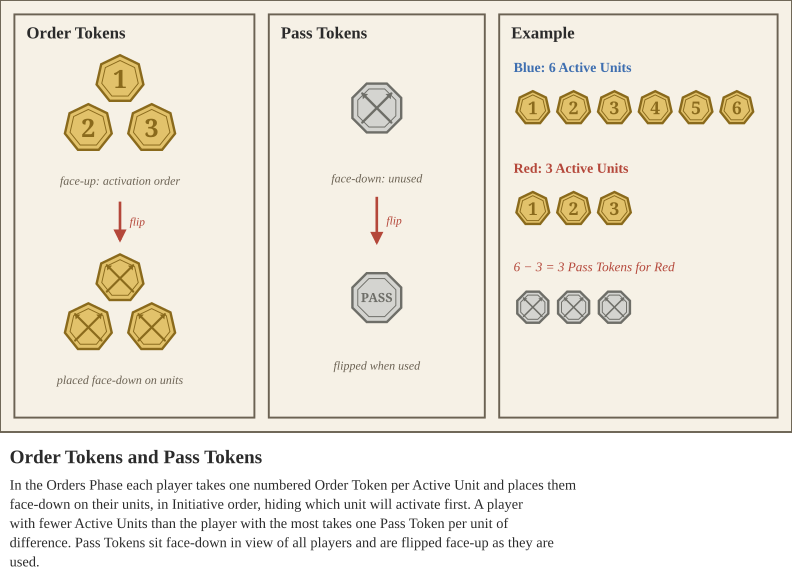

Syrrhēxis is fought over a series of Rounds, with players taking alternating turns as they descend through phase order. Most phases are played in Initiative order (see Initiative), such as the Reserves and Orders Phases. During the Activation Phase, players roll Initiative to see who activates first. And during the Combat Phase, players instead resolve Melees by the sizes of the fights.
In the Start of the Round and End of the Round Phases, players take a single turn each. In the Orders and Activation Phases, players take alternating turns until they have placed or used all their Order Tokens, respectively. In Reserves, Combat, and Morale phases, players take turns depending on how many units are in Reserves, Combat, or affected by psychological effects.
This Phase is only used for certain Command cards and special abilities. If any players have actions to take during the Start of the Round Phase, they take them in Initiative order, otherwise skip this Phase. See Commands for information on Command card usage.
As per Setting Up, there may be instances where a player has not yet deployed all their units. If there are no units in Reserves, skip this Phase. Otherwise, players take turns in Initiative order choosing to deploy (or not) units still in Reserves. Unless otherwise specified, units in Reserve cannot be deployed until the second round, and must be deployed by the fourth round, or they are considered destroyed.
When a unit is selected to be deployed from reserves, it is placed along its Friendly board edge, or along either Neutral board edge within its own half of the battlefield, and then makes a standard move, as described in Setting Up. Order Tokens can be placed as normal in the next Phase. Special Rules, Command cards, and Mission Rules may modify how units are deployed from Reserves.
The Orders Phase governs the placement of Order Tokens - a two-sided token that conceals the order in which you wish to activate your units. Order Token 1 represents the first unit you wish to Activate, Order Token 2 the second, and so on, in the Activation Phase.

At the beginning of the Orders Phase, first all players must count how many units are currently deployed on the battlefield and not destroyed, i.e. their Active Units. Then, they should take sequential Order Tokens for the number Active Units they have. For example, if a player has 3 Active Units, they take Order Tokens 1, 2, and 3. These tokens indicate the order in which players will activate their units in the next Phase.
Then, each player compares their number of Active Units amongst each other. Each player receives a number of Pass Tokens equal to the difference between their number of Active Units and the player with the most Active Units. For example, if a player has 3 Active Units, and their opponent has 6, they receive 3 Pass Tokens.
In Initiative order, players take turns assigning a single face-down Order Tokens to a unit. They can place any value Order Token on any given turn, they need not place them in value order. Each unit may only be assigned a single Order Token. Once all Order Tokens have been placed, each player sets aside their Pass Tokens face-down somewhere within view of all players.
The Activation Phase is where players take turns, back and forth, activating their units, until all Order Tokens and Passes have been turned face-up. First, they determine Initiative, as explained under Initiative.
Starting with the player with the greatest Initiative result, players take turns activating units by flipping their lowest value face-down Order Token face-up or declaring a Pass and flipping a Pass Token face-up. Players may not activate units out of order, unless otherwise stated. See Initiative for how to determine results.
A unit’s activation has two steps. First it moves, either together as a Closed Order unit or individually as an Open Order unit; some actions and modifiers increase or decrease how far (see Movement). Then it may either Shoot, if it has Ranged Gear or Equipment (see Shooting), or attempt to Rally another unit (see Rallying).
Closed Order units and Open Order models may divide their move, so that they move, activate a special ability or turn, and then continue moving the rest of their allowed distance. Each part of a divided move is rounded up to the nearest inch. For example, if a unit with a Move Value of 5 moves 3.1” before activating an ability, it has spent 4” and can move only 1” more. Turning may also use up Move Allowance (see Turning). A unit may not move during the Shooting step without a special ability.
Depending on which action the unit took, grab the appropriate token and place it beside the face-up Order Token. And then once the player finishes activating their unit, continue in Initiative Order to the next player’s turn to activate. Units with Hold tokens from the previous round remove them before continuing with their newly selected action.
A unit with a Flee Action Token does not choose an action and gains no new Action Token. At the start of its activation it attempts to Rally itself, and if it does not, it Flees (see Flee Action Token). A unit that is Rallied before it activates takes its turn as normal.
After all units have activated, play proceeds to the Combat Phase. This Phase consists of two steps: Melee and Resolution. In The Melee Step, players determine the number of Melees that have occurred, using the rules from Melee to determine which units are locked into fighting. Then, starting with the Melee with the greatest total Unit Strength (if Melees are tied, the player first in Initiative order chooses which to resolve first), players will resolve their attacks by rolling to Hit, Wound, and Save. After each Melee is resolved, continue to the next Melee with the next greatest total Unit Strength.
In the Resolution Step, units that took Damage will lose Army Morale and resolve effects related to Unit Health. Then, the winning side may end up making some Combat Moves. See the Resolution rules section for details.
Successes and losses in the Activation and Combat Phases shape the fighting spirit of each player’s army. This is tracked as Army Morale. During this phase, players will take tests and apply modifiers depending on how their units are holding up
In Initiative order, each player will take a turn to proceed through a series of steps in the Morale Phase - Update, Breaking, and Fleeing. In the Update Step, players who have suffered large losses across their armies will apply penalties to their units, and an army whose Army Morale reaches 0 is Completely Routed. In the Breaking Step, units with Break Tokens will take Break Tests to determine if they stand firm or flee. In the Fleeing Step, units with Flee Tokens will perform mandatory movement as they run to safety.
Some abilities and Command effects only last through the End of the Round Phase. Remove all tokens on the board that persist through the Round, such as Order Tokens, Charge Tokens, and so on. Hold and Flee tokens are not removed at The End of the Round Phase. Command cards cannot be played during the End of the Round, except Weather cards.
Play continues onto the next round, starting again at the Start of the Round Phase. Most missions keep track of the number of Rounds that have passed - note the passing of each Round in some place visible to all players.